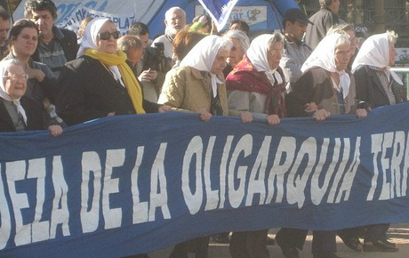

|
|

آرژانتین راه را نشان می دهد / تلاشهای «مادران میدان مایو» برای یافتن کودکان ربوده شده
از: Ana Valdés / ترجمه: شهرزاد امین
دو شنبه26 تیر 1391
تغییر برای برابری: ژنرال آرژانتینی جورج رافائل ویلدا به 50 سال زندان محکوم شد. او هم اکنون 89 ساله است و انتظار می رود که در زندان بمیرد. سرنوشت یکسانی در انتظار همکاران هم سن و سال وی است. عدالت آرژانتینی دستان نیرومند خویش را نشان می دهد.
بیش از 500 کودک در دوران حکومت نظامیان در آرژانتین ربوده شده و بعنوان غنایم جنگی به نظامیان فاقد فرزند بخشیده شدند. این کودکان بدون کسب اطلاع از هویت وتاریخچه خویش بزرگ شده و هیچگونه اطلاعاتی در مورد والدین مقتول خویش که در گورستانهای دسته جمعی و گمنام به خاک سپرده شدند، نداشتند.
چند روز پیش مردی در اوروگوئه را ملاقات کردم که از هویت خویش در سن 24 سالگی مطلع شد. او از خشم و ازسوء ظن خویش نسبت به همه چیز و همه کس، از جستجوی خویش در یافتن اقوام و دوستان والدینش سخن می گفت. روانکاوان و روانپزشکان بطور داوطلبانه در آرژانتین و اوروگوئه کار می کنند تا از این کودکان حمایت کنند. تنها 196 تن از این کودکان به والدین بیولوژیکی خویش باز پس داده شده اند. مادران پلازا د مایو Plaza de Mayo ملقب به "مادران دیوانه" و اکنون والدین این کودکان ”Las Abuelas de Mayo”, یک مخزن اطلاعاتی با آزمایشات دی ان ای را فراهم کرده اند که مخالفان، فرزندان آنان و اقوام ناپدید شدگان را به هم پیوند می دهد.
بدون تلاش این مادران و مادر بزرگان، پیدا کردن این کودکان غیر ممکن بود، چرا که به قضیه ربودن کودکان در محاکمات قضائی نظامیان در Rio de la Plata اولویت داده نشده بود. فضای حاکم برمحاکمات بیشترحاکی از بازماندگان ناپدید شدگان بوده است، قریب به 30000 نفر جان خویش را در مبارزه با دیکتاتورهای مختلف آرژانتین از دست دادند.
از دوستم سوال می کنم که چرا پی بردن به هویت خویش و والدینش برای وی مهم بوده است. او پاسخ می دهد:
من دیگر علائم را میبینم. وقتی که کودک بودم همیشه این سوال برایم پیش می آمد که چرا چهره من متفاوت از والدینم بود، پوست آنها تیره بود، من خیلی روشنتر بودم، هیچگونه عکسی از دورا ن بارداری مادرم وجود نداشت، من متفاوت از اقوامم بودم، خیلی چیزها صدق نمی کرد. بلافاصله بعد از اینکه 18 ساله شدم شروع به پرس و جو از اطرافیان کردم و در نتیجه به تشکل مادران Plaza de Mayo راه یافته و آزمایش خون دادم.

من چیزی در این مورد به پدر خوانده و مادر خوانده ام نگفتم. پس از چند ماه به هویت والدین بیولوژیکی ام پی برده و فهمیدم که هیچکدام از والدینم در قید حیات نیستند، که آنها اهل اوروگوئه بوده و مادر بزرگم در Montevideo زندگی می کند. من نزد پدر و مادر خوانده ام برگشتم و آنان را مورد بازخواست قرار دادم، انها نتوانستند حقیقت را انکار کنند. آنها به من گفتند که خودشان مستقیما در تعیقیب مخالفان دخالت نداشته اند اما آ صاحب فرزندی شده اند که مدتها در آرزویش بودند. پس از رویاروی با پدر و مادر خوانده او نزد مادر بزرگش در Montevideo نقل مکان کرد و صاحب نام و هویت جدیدی شد. در مورد پدر و مادر خونده نیز نمی شود صحبت کرد او ارتباطش را با آنها قطع کرده است.
عملیات کرکسها بر علیه دگر اندیشان
Plan Condor* پروژه پینوشه و کیسینجر که بر اساس آن پلیس آمریکای جنوبی و ارتش در تعقیب دگر اندیشان همکاری می کردند، باعث ایجاد ناامنی عمومی شد. انسانها بدون توجه به حقوق شهروندی و مرزها تحت تعقیب قرار می گرفتند، اهالی پاراگوئه و آرژانتین دستگیر و در زندانهای شیلی واروگوئه زندانی شدند، برزیلی ها در پاراگوئه کشته شدند و شیلی یائی ها ناپدید شدند. حتی کشور آمریکا نیز مطمئن نبود، مشاور رئیس جمهور شیلی، سالوادور آلنده، اقتصاد دان Orlando Letelier بعنوان نمونه در سال 1976 در واشنگتن کشته شد. اوروگوئه همچنان در انتظار عدالت است اما در حال حاضر این آرژانتین است که راه را نشان می دهد.
*http://en.wikipedia.org/wiki/Operation_Condor
منبع: تارنمای پرسپکتیو فمینیستی
عکس از: Never Ending Voyage